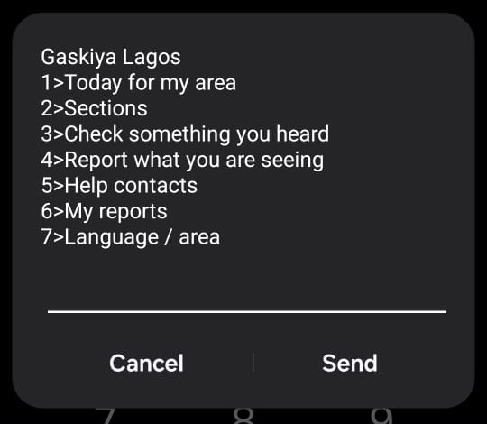

OSF x Andela Hackathon 2026 · Information you can trust
A daily civic paper on any phone. Sourced, dated, in your language, with a next step on every item.
Dial from any MTN, Glo or 9mobile line in Nigeria. No app, no data.

Real handset, live network, 19 Sep 2026
Olamigoke Olabampe
Cross-track: Stability & Social Cohesion · Safety, Reporting & Protection
Gaskiya is Hausa for truth, after the newspaper Gaskiya Ta Fi Kwabo: truth is worth more than a penny.
The problem
Curfews, aid points, vaccination drives and deadlines are published as PDFs, press releases and website posts. Most people affected never see them.
Word of mouth and forwarded messages move faster than any notice. In fragile areas a false "they are coming tonight" can move a whole neighbourhood.
Feature phones, no data bundle, patchy networks and many languages. Information tools built for smartphones and English skip the people who need them most.
The gap is not a lack of information. It is that trusted information does not arrive where people are, in a form they can act on.
Who it is for
Anyone with a GSM phone in a place where notices matter and trust is thin.
The people communities already trust to verify, given a desk that sorts for them.
Seeded for the partner geographies: Nigeria, Kenya, DR Congo, Sudan, Mozambique and Mali. 27 areas today. Adding one is a data-file edit.
The solution
The last page of every item names the source and date. Nothing is shown without one.
"Abin da za a yi" (what to do): where to go, who to call, what to bring, by when.
Up to three screens per item with a More key. Every screen fits 160 characters, enforced by tests.
More than presenting information
Type the rumour. It is tested against trusted notices only. Verdict, source and date come back in your language.
Four screens, no name, no number kept. A reference code and an emergency contact come back at once.
Translates to English, strips private names, sets urgency, groups similar reports into clusters. Never publishes.
Writes what a trusted source confirms, names the source. It goes to the front page. The reporter sees "Verified, published".
Trust and accuracy
40-claim eval run against the live model, 18 Sep 2026
| Accuracy | 97.5% |
| False confirmations | 0 |
| Wrong source cited | 0 |
| Time per check | ~1.2 s |
The one miss was the safe kind: an UNVERIFIED where NOT TRUE was justified. npm run eval reproduces it.
The brief's seven constraints
| Constraint | How Gaskiya answers it |
|---|---|
| Trust and verification | Source and date on every item. Cite-or-UNVERIFIED guard. Human publication. Public eval. |
| Low bandwidth, basic devices | USSD on any GSM phone, zero data. Every screen under 160 characters. One machine always warm so no cold start eats the session. |
| Accessibility and inclusion | Numbered menus, at most one free-text step, plain ASCII so it renders on any handset. |
| Privacy and security | Phone numbers salted-hashed before storage. No names. Five-report threshold before anything is visible. 90-day purge. |
| Multilingual access | English, French, Arabic, Portuguese, Kiswahili, Hausa, Yoruba, Igbo, plus Other: type any language and the interface is localised on the spot and cached. |
| Local relevance | Countries, areas, contacts and notices are data files. Six countries, 27 areas seeded. |
| Clear next steps | A mandatory "What to do" line on every item. Emergency contact shown the moment a safety report is filed. |
Scalability
Nigeria, Kenya, DR Congo, Sudan, Mozambique, Mali. 27 areas. Adding one is a JSON edit and a translation run.
Eight fixed packs generated offline. "Other" is translated live the first time a language is asked for, then cached for everyone after.
Qrios (live) and an Africa's Talking-style plain-text endpoint. A new gateway is about ten lines. The state machine never changes.
Provisioned on Qrios and reachable on MTN, Glo and 9mobile across Nigeria. Deployed on Fly.io with persistent storage. This is not a simulator demo; the screenshot on the cover is a phone.
All content is pre-generated. Only two things call the model inside a session: the rumour check (about a second) and the first request for a new language. Everything else is a lookup.
AI usage
One person, one day. The assistant read the Qrios OpenAPI spec and implemented the exact callback protocol, wrote the state machine, adapters, dashboard, simulator, generator, eval and tests, and drove full sessions over HTTP before any UI existed.
JSON-mode calls validated against schemas. Localises strings and notices into eight languages offline. Live: the rumour verdict and on-demand languages. After the reply: report triage. It never publishes and never sees a phone number.
First generation run: most items came back empty. Cause: the model's chain-of-thought was on by default and ate the token budget. Fix: thinking off, retries, resume. Then "Arabic" drifted into Hausa for Nigerian notices. Fix: unambiguous language prompts and a drift check. Both are documented in the repo.
Guard rails over trust. ASCII-only output for GSM handsets, length budgets per screen, placeholder integrity checks, non-empty field checks, a hard "cite a real notice or say UNVERIFIED" rule enforced in code, and a 40-claim eval anyone can rerun with npm run eval.
Impact and what comes next